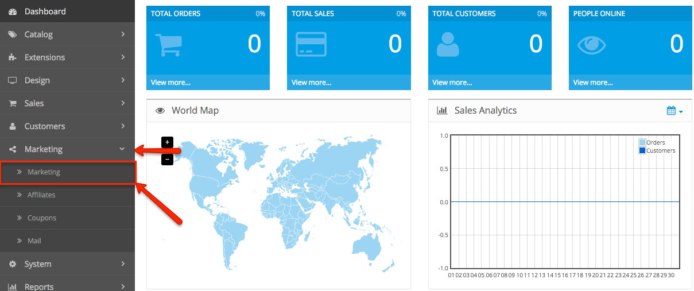
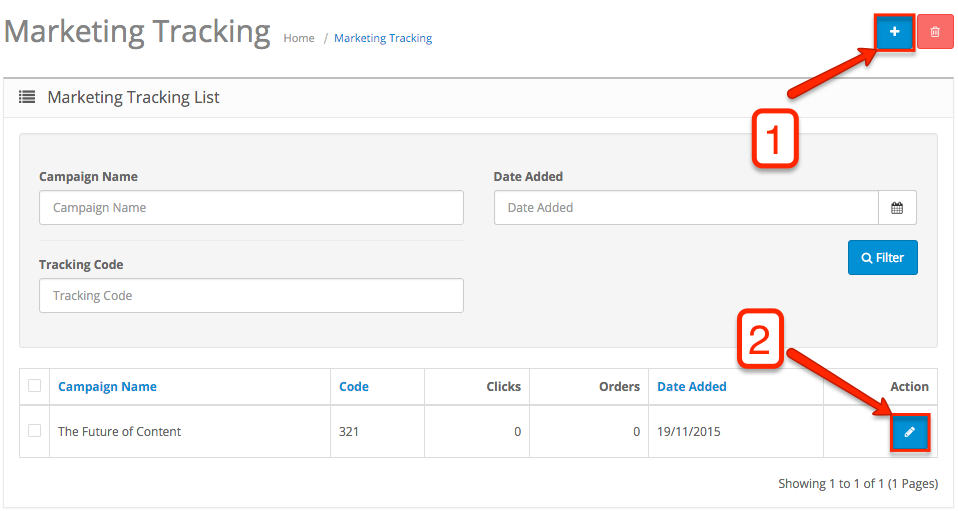
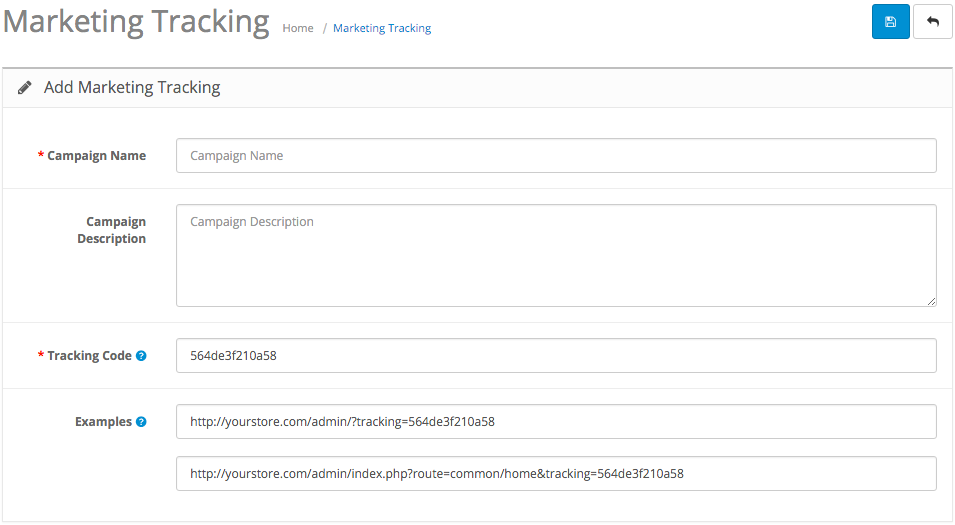

The Marketing section in your OpenCart dashboard allows you to add and track the marketing campaigns you create. To access the section from the dashboard, go to the Marketing field, click it, and you will see submenus named Marketing, Affiliates, Coupons, Mail. Click on Marketing.

The first section you will see is named Marketing Tracking. On this page, you can track and search the marketing campaigns you have added. We have added an example for a marketing campaign named "The Future of Content".
You can add your campaigns from the Add New button in the top right corner of the screen (Option 1). Once you start creating your new marketing campaigns, you will be able to search them by Campaign Name, Date Added and Tracking Code. You can make additional editing to each campaign using the Edit button at the bottom right corner of the screen (Option 2).

In the section where you add a new marketing campaign, you have several open fields.

1. Campaign Name - choose the name of your new marketing campaign (for our example, we used “The Future of Content”).
2. Campaign Description - write the description of your new marketing campaign (for example, what is the main subject, what are the goals and methods you will be using).
3. Tracking Code - this code will be generated automatically, but you can edit the field and choose a custom number for easier tracking. The URLs below will be automatically updated with the number you input.
To track your campaigns, the tracking code is added to the end of the URL leading to each marketing campaign. You can embed the code into each of the links you chose in your website.
When you are creating a banner for an advertising campaign in your website or another online media platform, you have to create a new marketing campaign. The new campaign will be used to track how many clicks you get and where they came from by embedding the tracking code in the link to the campaign.
Example. You start advertising in three different media platforms. You will need to add a new marketing campaign for each of them, with the name of each media platform you are advertising on. That way, you will track how many clicks you get from each of their websites. You simply give them the link with the embedded tracking code of each marketing campaign.